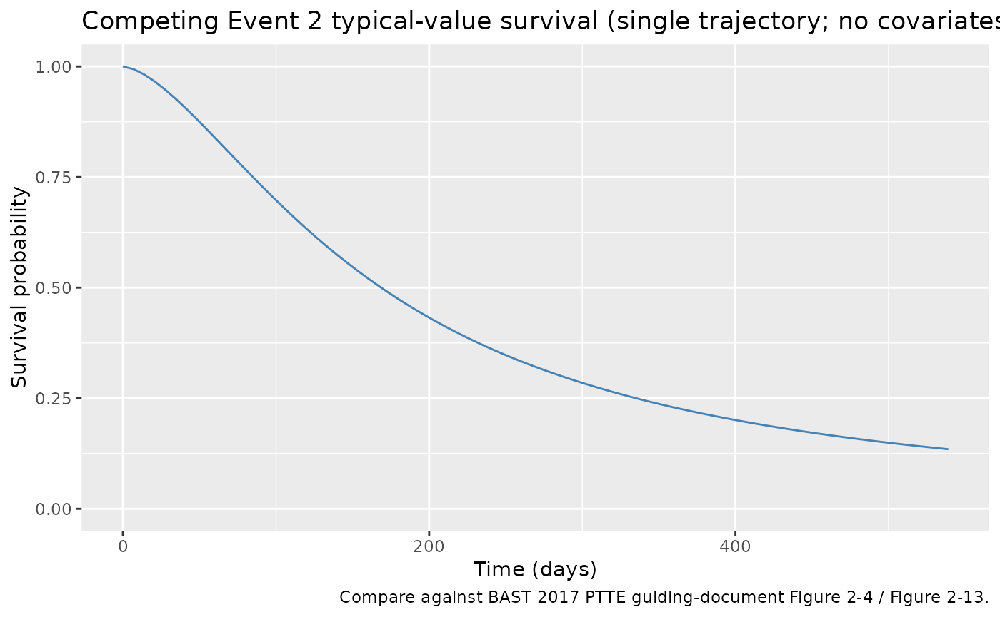
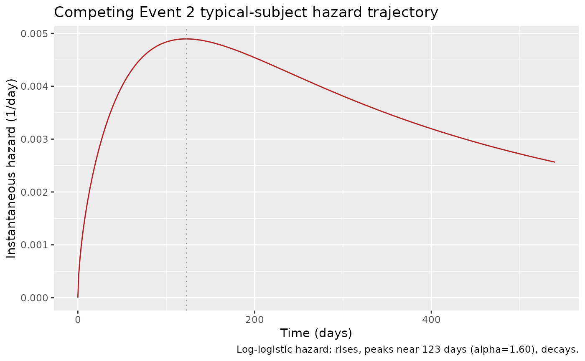

NA_NA_tte_loglogistic
Source:vignettes/articles/NA_NA_tte_loglogistic.Rmd
NA_NA_tte_loglogistic.RmdModel and source
- Citation: BAST Inc Limited. BAST approach to parametric time-to-event (PTTE) modelling. Loughborough, UK; 12 July 2017. Internal guiding document (BAST_PTTE_modelling.pdf) shipped with DDMORE bundle DDMODEL00000243; no peer-reviewed publication. Run prepared by Jon Moss (Command.txt; runCOMPEV2_005). DDMORE Foundation Model Repository: DDMODEL00000243.
- Description: Parametric time-to-event log-logistic hazard model for Competing Event 2 in the BAST PTTE 2017 four-event teaching dataset (DDMODEL00000243). Hazard h(t) = alpha * (lam^alpha) * t^(alpha-1) / (1 + (lam*t)^alpha), where lam = lambda/1000 and alpha is unscaled. No covariates were retained. Note: the BAST guiding-document text (Section 2.4.1, Figure 2-4) selected log-normal as the base distribution for Competing Event 2, but the executable supplied with the bundle (Executable_runCOMPEV2_005.mod, $PROBLEM ‘Log_logistic model’) and the final-fit listing in the bundle are log-logistic, not log-normal. This file follows the executable; the publication-vs-bundle distribution discrepancy is documented in the validation vignette’s Errata.
- Source: BAST Inc Limited, “BAST approach to parametric time-to-event
(PTTE) modelling,” internal guiding document, 12 July 2017
(
BAST_PTTE_modelling.pdfshipped in the DDMORE bundle). - DDMORE Foundation Model Repository entry: DDMODEL00000243
- Source bundle (local mirror):
dpastoor/ddmore_scraping/243/ - Linked publication: none. The bundle is a
methodological teaching example built on entirely simulated data; the
BAST guiding-document text states “there is not yet a publication to go
along with the model” (
Model_Accommodations.txt).
This vignette validates the BAST 2017 PTTE Competing Event 2 hazard
model packaged under
inst/modeldb/ddmore/NA_NA_tte_loglogistic.R (NONMEM run
name runCOMPEV2_005). Competing Event 2 in the bundle is
right-censored only; no covariate was retained. Note:
the BAST guiding-document text Section 2.4.1 (Figure 2-4) selected
log-normal as the base distribution for Competing Event 2 by AIC, but
the executable shipped in the bundle
(Executable_runCOMPEV2_005.mod,
$PROBLEM "Log_logistic model") and the final-fit listing
are log-logistic, not log-normal – see the Errata section below.
For sibling Event 1, Event 2, and Competing Event 1 hazard models
from the same bundle, see NA_NA_tte_gompertz.R,
NA_NA_tte_gompertz_ev2.R, and
NA_NA_tte_lognormal.R.
Population
The BAST 2017 PTTE bundle is a methodological teaching example with N = 200 simulated patients, four timed event types, and six baseline covariates (BAST Section 2.2.2). Of the 200 simulated patients, 142 (71%) experienced Competing Event 2 (BAST Table 2-1) – the highest event incidence of the four event types. Competing Event 2 is right- censored only (CENSORING = 1); exact event times are observed.
m <- readModelDb("NA_NA_tte_loglogistic")
str(m()$meta$population, max.level = 1)
#> List of 10
#> $ n_subjects : int 200
#> $ n_studies : int 1
#> $ age_range : chr "24-84 years (mean 58.7) in the BAST PTTE 2017 simulated cohort"
#> $ weight_range : chr "not reported (the BAST PTTE 2017 simulated cohort does not include body weight)"
#> $ sex_female_pct: num NA
#> $ race_ethnicity: NULL
#> $ disease_state : chr "Hypothetical / unspecified clinical population (the BAST PTTE 2017 guiding document is a methodological teachin"| __truncated__
#> $ dose_range : chr "Not applicable (no drug administration is modelled)."
#> $ regions : chr "Not applicable (simulated data)."
#> $ notes : chr "200 simulated patients; 142 (71%) had Competing Event 2. Competing Event 2 is right-censored only (CENSORING = "| __truncated__Source trace
| Equation / parameter | Value | Source location |
|---|---|---|
Hazard form
h(t) = alpha * lam^alpha * t^(alpha-1) / (1 + (lam*t)^alpha)
|
n/a | Executable_runCOMPEV2_005.mod $PK / $DES
(Lam1 = Lam/1000, alpha1 = alpha,
val1 = alpha1*(lam1**alpha1)*T**(alpha1-1)); BAST guiding
doc Appendix B |
llam_compev2 (lambda) |
log(5.93) | Output_simulated_runCOMPEV2_005.res FINAL TH1 = 5.93E+00; rescaled by /1000 inside model() |
lalpha_compev2 (shape) |
log(1.60) | Output_simulated_runCOMPEV2_005.res FINAL TH2 = 1.60E+00; not rescaled |
eta on lam (OMEGA(1,1)) |
0 FIXED | Output_simulated_runCOMPEV2_005.res FINAL OMEGA(1,1) = 0.00E+00 (placeholder; no estimated IIV) |
| Covariate-selection result | none | BAST guiding doc Section 2.4.2, Table 2-5 (no covariate DeltaOFV exceeded the -6.6 threshold; final model has no covariates) |
Virtual cohort
set.seed(20260506)
n_subjects <- 50
cohort_subjects <- tibble(id = seq_len(n_subjects))
obs_grid <- tibble(
time = c(0, seq(7, 540, by = 7)),
evid = 0L,
amt = 0
)
events <- tidyr::crossing(cohort_subjects, obs_grid)
events <- events[, c("id", "time", "evid", "amt")]
stopifnot(!anyDuplicated(unique(events[, c("id", "time", "evid")])))
cat("Cohort: ", n_subjects, " subjects, ", nrow(events), " event rows\n", sep = "")
#> Cohort: 50 subjects, 3900 event rowsSimulation
sim <- rxode2::rxSolve(m, events = events) |>
as.data.frame()Because the model has no covariates and no IIV, all 50 subjects share the same trajectory. The plot below shows a single-line typical-value survival curve.
Replicate published behaviour – typical-value survival trajectory
The BAST guiding document Section 2.4.1 (Figure 2-4) reports a
Kaplan-Meier curve of Competing Event 2 vs. the candidate parametric
distributions. The covariate VPC (Figure 2-13, Figure 2-14) covers the
window 0 – 400 days. Competing Event 2 is the most aggressive event in
the bundle (71% incidence); at the typical-value parameters (lambda =
5.93/1000, alpha = 1.60), the model’s survival drops from
S(0) = 1 to about S(400) ~= 0.20.
sim |>
filter(id == 1L) |>
ggplot(aes(time, sur)) +
geom_line(colour = "steelblue") +
labs(
x = "Time (days)",
y = "Survival probability",
title = "Competing Event 2 typical-value survival (single trajectory; no covariates, no IIV)",
caption = "Compare against BAST 2017 PTTE guiding-document Figure 2-4 / Figure 2-13."
) +
scale_y_continuous(limits = c(0, 1))
Mechanistic sanity checks (verification-checklist Section F.3)
F.3.1 – Hazard has the characteristic log-logistic shape (rises then falls when alpha > 1)
The log-logistic hazard with alpha > 1 rises, peaks
at t_peak = (alpha - 1)^(1/alpha) / lam, and decays at long
times. With alpha = 1.60 and
lam = 5.93/1000 = 0.00593, the peak is at
(0.60)^(1/1.60) / 0.00593 ~= 0.731 / 0.00593 ~= 123 days.
The check below confirms the simulated hazard rises, peaks near day
100-150, and falls.
ev_typ <- tibble(id = 1L, time = c(0, seq(1, 540, by = 1)),
evid = 0L, amt = 0)
sim_typ <- rxode2::rxSolve(m, events = ev_typ) |> as.data.frame()
ggplot(sim_typ, aes(time, hazard)) +
geom_line(colour = "firebrick") +
geom_vline(xintercept = 123, colour = "grey60", linetype = "dotted") +
labs(x = "Time (days)", y = "Instantaneous hazard (1/day)",
title = "Competing Event 2 typical-subject hazard trajectory",
caption = "Log-logistic hazard: rises, peaks near 123 days (alpha=1.60), decays.")
hazard_peak_idx <- which.max(sim_typ$hazard)
hazard_peak_time <- sim_typ$time[hazard_peak_idx]
cat("Hazard peaks at t =", hazard_peak_time, "days\n")
#> Hazard peaks at t = 123 days
# Peak should be in the 60-200-day window (closed-form predicts ~123).
stopifnot(hazard_peak_time > 60, hazard_peak_time < 200)
# Hazard at peak should exceed both early-time (t = 1) and late-time
# (t = 500) values.
stopifnot(sim_typ$hazard[hazard_peak_idx] > sim_typ$hazard[sim_typ$time == 1])
stopifnot(sim_typ$hazard[hazard_peak_idx] > sim_typ$hazard[sim_typ$time == 500])F.3.2 – Closed-form survival check at long times
For a log-logistic with lam (rate) and
alpha (shape), the cumulative hazard is
H(t) = log(1 + (lam * t)^alpha). Compute the typical-value
survival at day 200 from the closed form and compare against the
integrated-ODE simulation:
lam <- 5.93 / 1000
alpha <- 1.60
t_check <- 200
H_closed <- log(1 + (lam * t_check)^alpha)
S_closed <- exp(-H_closed)
# rxode2 grid is whole-day; pick t = 200.
S_sim <- sim_typ$sur[sim_typ$time == t_check]
cat(sprintf("S(%d) closed-form = %.4f, simulation = %.4f\n",
t_check, S_closed, S_sim))
#> S(200) closed-form = 0.4322, simulation = 0.4322
# Allow 1% relative tolerance for ODE-integration error.
stopifnot(abs(S_closed - S_sim) / S_closed < 0.01)Self-consistency with the bundle’s simulated dataset (F.2)
A full F.2 self-consistency check would re-simulate the bundle’s
shipped Simulated_event_data.csv (200 subjects, DVID = 4
records) under the nlmixr2lib model and compare against the bundle’s
Output_simulated_runCOMPEV2_005.res $TABLE
output. The bundle dataset is outside this package and not
redistributed.
Assumptions and deviations
Distribution discrepancy between the BAST guiding-document text and the bundle’s executable. The BAST PTTE 2017 guiding document Section 2.4.1 (Figure 2-4) selects log-normal as the base distribution for Competing Event 2 (AIC -2.144 vs. exponential 0). However, the bundle ships an executable (
Executable_runCOMPEV2_005.mod) whose$PROBLEMline declares “Log_logistic model” and whose hazard equation is the log-logistic form, not the log-normal form. The .res listing (Output_simulated_runCOMPEV2_005.res) is consistent with the log-logistic.mod. We follow the executable that produced the shipped final estimates (the.lstis the source of truth for parameter VALUES per the skill’s verification checklist). The packaged nlmixr2lib model is therefore log-logistic, matching the bundle’s executable rather than the guiding-document narrative. A log-normal alternative is already provided inNA_NA_tte_lognormal.R(Competing Event 1).-
Numerical rescalings preserved. The .mod uses a /1000 rescaling on lambda only; alpha is not rescaled. The biologically meaningful values are:
- Log-logistic lambda: 5.93 / 1000 = 0.00593 / day
- Log-logistic alpha (shape): 1.60 (unitless)
No
DEL = 1e-8offset on the time term. The BAST guiding document’s Appendix B canonical log-logistic form uses(t + DEL)^(alpha - 1)with a small-time offset; the bundle’s Executable_runCOMPEV2_005.mod $DES omits the offset and usesT^(alpha - 1)directly. We follow the bundle’s executable. Att = 0andalpha > 1, the term evaluates to 0 (finite), so the hazard is well-defined.No estimated IIV. The source
$OMEGAis0 FIX. No inter- subject variability is in the BAST PTTE 2017 guiding-document model. Combined with the absence of covariates, every subject’s typical- value trajectory is identical.No publication-PDF cross-check. The BAST PTTE 2017 guiding document is the only source of equations and methodological narrative; no peer-reviewed publication exists.
Convention warning.
nlmixr2lib::checkModelConventions()flags theunits$concentrationfield (the TTE outputsuris a survival probability, not a mass/volume concentration). The compartment is namedcumhaz(canonical TTE auxiliary-state name).